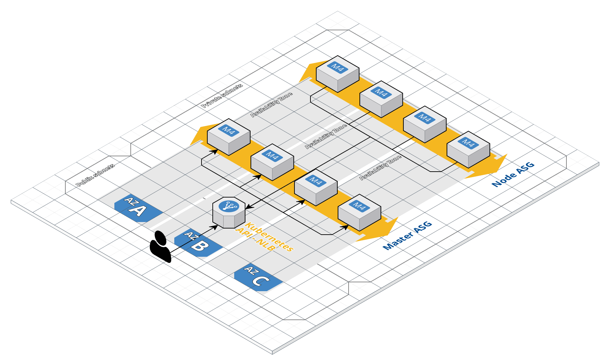

Deploying on AWS¶
Symplegma supports AWS as a cloud provider.
Architecture¶
contrib/aws/ contains terraform file to deploy the following architecture. This is strongly opinionated and deploys the following architecture:

For now, each cluster has its own VPC, subnets, NAT etc. VPC module is included inside the symplegma module, this is subject to change in the future as PR are welcomed to make the possibilities evolved and split modules.
Requirements¶
Git clone Symplegma main repository:
git clone https://github.com/clusterfrak-dynamics/symplegma.git
Fetch the roles with ansible-galaxy:
ansible-galaxy install -r requirements.yml
Terraform and Terragrunt¶
Terragrunt is used to enable multiple cluster and environments, also to enable remote state storage and locking with Terraform.
Terraform remote state is stored in an encrypted S3 bucket and state locking is done with AWS DynamoDB.
Terragrunt modules¶
Symplegma is packaged in a Terragrunt module available here.
Terragrunt variables¶
Remote state specific variables:
terragrunt = {
remote_state {
backend = "s3"
config {
bucket = "symplegma-remote-state"
key = "${path_relative_to_include()}"
region = "eu-west-1"
encrypt = true
dynamodb_table = "symplegma-remote-state-lock"
}
}
}
Cluster specific variables:
terragrunt = {
include {
path = "${find_in_parent_folders()}"
}
terraform {
source = "github.com/clusterfrak-dynamics/symplegma.git//contrib/aws/terraform/modules/symplegma"
}
}
//
// [provider]
//
aws_region = "eu-west-1"
//
// [kubernetes]
//
cluster_name = "symplegma"
//
// [module][vpc]
//
vpc_name = "symplegma"
vpc_cidr = "10.0.0.0/16"
vpc_azs = ["eu-west-1a", "eu-west-1b", "eu-west-1c"]
vpc_private_subnets = ["10.0.1.0/24", "10.0.2.0/24", "10.0.3.0/24"]
vpc_public_subnets = ["10.0.101.0/24", "10.0.102.0/24", "10.0.103.0/24"]
vpc_enable_nat_gateway = true
vpc_enable_dns_hostnames = true
vpc_tags = {
Environment = "sample"
}
//
// [module][bastion]
//
bastion_name = "symplegma-bastion"
bastion_ami = "ami-00035f41c82244dab"
bastion_instance_type = "t2.small"
bastion_key_name = "klefevre-sorrow"
bastion_tags = {
Terraform = "true"
Environment = "sample"
}
//
// [module][master_asg]
//
master_asg_ami = "ami-099b2d1bdd27b4649"
master_asg_root_volume_size = 50
master_asg_max_size = 3
master_asg_min_size = 3
master_asg_desired_capacity = 3
master_asg_instance_type = "t3.large"
master_asg_key_name = "klefevre-sorrow"
master_asg_tags = [
{
key = "Environment"
value = "sample"
propagate_at_launch = true
}
]
//
// [module][node_asg]
//
node_asg_ami = "ami-099b2d1bdd27b4649"
node_asg_root_volume_size = 50
node_asg_max_size = 2
node_asg_min_size = 2
node_asg_desired_capacity = 2
node_asg_instance_type = "t3.large"
node_asg_key_name = "klefevre-sorrow"
node_asg_tags = [
{
key = "Environment"
value = "sample"
propagate_at_launch = true
}
]
//
// [nlb]
//
kubernetes_api_lb_port = 443
kubernetes_api_tg_port = 6443
kubernetes_api_lb_tags = {
Environment = "sample"
}
Creating the infrastructure¶
To init a new AWS cluster, simply run ./scripts/init-aws.sh $CLUSTER_NAME
It will generate inventory/aws/$CLUSTER_NAME with the following directory structure:
sample
├── aws.py -> ../../../contrib/aws/inventory/aws.py
├── extra_vars.yml
├── group_vars
│ └── all
│ └── all.yml
├── host_vars
├── symplegma-ansible.sh -> ../../../contrib/aws/scripts/symplegma-ansible.sh
└── tf_module_symplegma
└── terraform.tfvars
Customizing the infrastructure¶
Terraform variable files come with sensible default for the eu-west-1 region.
If you wish to change remote state configuration you can edit $CLUSTER_NAME/terraform.tfvars
If you wish to customize the infrastructure you can edit $CLUSTER_NAME/tf_module_symplegma/terraform.tfvars
One of the most important variable is cluster_name that allows you tu use AWS dynamic inventory with multiple cluster. We recommend this variables to be coherent throughout your files and equals to $CLUSTER_NAME defined earlier.
There is also a set of sensible default tags that you can customize such as Environment for example or add your own.
To avoid bloating the configuration files and unnecessary hard coded values, Terraform provider credentials are derived from your AWS SDK config. Make sure you are using the correct aws profile by setting your AWS_PROFILE environment variable.
Initializing the infrastructure¶
Once everything is configured to your needs, just run:
terragrunt apply-all --terragrunt-source-update
Couples minute later you should see your instances spawning in your EC2 dashboard.
Deploying Kubernetes with symplegma playbooks¶
AWS Dynamic inventory¶
AWS dynamic inventory allows you to target a specific set of instances depending on the $CLUSTER_NAME you set earlier. You can configure the behavior of dynamic inventory by setting the following ENV:
export SYMPLEGMA_CLUSTER=$CLUSTER_NAME: Target only instances belonging to this cluster.export SYMPLEGMA_AWS_REGION=eu-west-1: AWS region where instances are targeted.
To test the behavior of the dynamic inventory just run:
./inventory/aws/${CLUSTER_NAME}/aws.py --list
It should only return a specific subset of your instances.
Info
These variables can be exported automatically when using the deployment script, but they can still be set manually for testing / manual deployment purposes.
Customizing Kubernetes deployment¶
In the cluster folder, it is possible to edit Ansible variables:
group_vars/all/all.yml: contains default Ansible variables.
--- ansible_ssh_user: core ansible_python_interpreter: /opt/bin/python ansible_ssh_common_args: '-o StrictHostKeyChecking=no -o ProxyCommand="ssh -o StrictHostKeyChecking=no -W %h:%p -q ubuntu@{{ ansible_ssh_bastion_host }}"' ansible_ssh_bastion_host: __BASTION_IP__ kubeadm_version: v1.12.1 kubernetes_version: v1.12.1 # kubernetes_api_server_address: __NLB_HOSTNAME__ # kubernetes_api_server_port: __NLB_LISTENER_PORT__ cni_plugin: "calico" kubeadm_api_server_extra_args: {} kubeadm_controller_manager_extra_args: {} kubeadm_scheduler_extra_args: {} kubeadm_api_server_extra_volumes: {} kubeadm_controller_manager_extra_volumes: {} kubeadm_scheduler_extra_volumes: {} kubeadm_kubelet_extra_args: {} kubeadm_cluster_name: symplegma # kubeadm_etcd_image_image: "k8s.gcr.io/etcd:3.2.18"
Info
ansible_ssh_bastion_host, kubernetes_api_server_address and kubernetes_api_server_port can be automatically populated when using the deployment script but they can still be set manually for testing / manual deployment purposes.
extra_vars: contains AWS cloud provider specific variables that you can override.
--- kubeadm_api_server_extra_args: | cloud-provider: "aws" kubeadm_controller_manager_extra_args: |- cloud-provider: "aws" configure-cloud-routes: "false" kubeadm_scheduler_extra_args: {} kubeadm_api_server_extra_volumes: {} kubeadm_controller_manager_extra_volumes: {} kubeadm_scheduler_extra_volumes: {} kubeadm_kubelet_extra_args: | cloud-provider: "aws" calico_mtu: 8981 calico_ipv4pool_ipip: "CrossSubnet" calico_felix_ipip: "true"
Info
If you need to override control plane or kubelet specific parameters do it in extra_vars.yml as it overrides all other variables previously defined as per Ansible variables precedence documentantion
Running the playbooks with deployment script¶
A simple (really, it cannot be simpler) deployment script can call Ansible and compute the necessary Terraform output for you:
#! /bin/sh INVENTORY_DIR=$(dirname "${0}") export SYMPLEGMA_CLUSTER="$( cd "${INVENTORY_DIR}" && terragrunt output-all cluster_name 2>/dev/null )" export SYMPLEGMA_AWS_REGION="$( cd "${INVENTORY_DIR}" && terragrunt output-all aws_region 2>/dev/null )" ansible-playbook -i "${INVENTORY_DIR}"/aws.py symplegma-init.yml -b -v \ -e @"${INVENTORY_DIR}"/extra_vars.yml \ -e ansible_ssh_bastion_host="$( cd "${INVENTORY_DIR}" && terragrunt output-all -module=bastion public_ip 2>/dev/null )" \ -e kubernetes_api_server_address="$( cd "${INVENTORY_DIR}" && terragrunt output-all kubernetes_api_lb_dns_name 2>/dev/null )" \ -e kubernetes_api_server_port="$( cd "${INVENTORY_DIR}" && terragrunt output-all kubernetes_api_lb_listener_port 2>/dev/null)"
From the root of the repository just run your cluster deployment script:
./inventory/aws/${CLUSTER_NAME}/symplegma-ansible.sh
Testing cluster access¶
When the deployment is over, admin.conf should be exported in kubeconfig/$CLUSTER_NAME/admin.conf. You should be able to call the Kubernetes API with kubectl:
export KUBECONFIG=$(pwd)/kubeconfig/${CLUSTER_NAME}/admin.conf kubectl get nodes NAME STATUS ROLES AGE VERSION ip-10-0-1-140.eu-west-1.compute.internal Ready <none> 2d22h v1.12.1 ip-10-0-1-22.eu-west-1.compute.internal Ready master 2d22h v1.12.1 ip-10-0-2-47.eu-west-1.compute.internal Ready <none> 2d22h v1.12.1 ip-10-0-2-8.eu-west-1.compute.internal Ready master 2d22h v1.12.1 ip-10-0-3-123.eu-west-1.compute.internal Ready master 2d22h v1.12.1
Running E2E test with Sonobuoy¶
If you want to test your cluster, you can use Sonobuoy which run the standard conformance testing suite on your cluster.
Go to Sonobuoy scanner and just follow the instructions, the test results should be available after ⅔h.
EOD